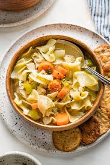

Chicken Noodle Soup

Let's make Chicken Noodle Soup!
We will be taking you step by step in the chicken noodle soup making process. You will learn what ingredients to use, how to prepare said ingredients for the dish, and the proper cooktime/temperature. Get that apron on, and your oven mitts handy because today we will be making a dish that the entire family will devour.
This recipe is simple enough for a novice, so let's dive in:
Ingredients:
- Chicken: 2 cups of pre-cooked, de-boned chicken, either cubed or shredded (can also use canned).
- Carrots: 2 large diced
- Celery 1 stalk,diced
- Egg Noodles One large bag
- Chicken Broth: Approx 32oz
- Water: 2 cups.
- Spices: Earthy spices such as tyme, oregano, basil, and dill go well with this dish. Pick your favorite along with salt and pepper to suit personal taste.
Steps:
- Cook chicken in advance or purchase prepared options as desired. Cut/cube/shred chicken and set aside for now.
- Prepare vegetables.
- In a large pot, add stock and water, bring to a boil.
- Add prepared vegetables to the boiling pot and allow to cook until they are relatively soft
- Add desired spices
- Add prepared chicken
- Allow to simmer until thoroughly heated
- Enjoy!